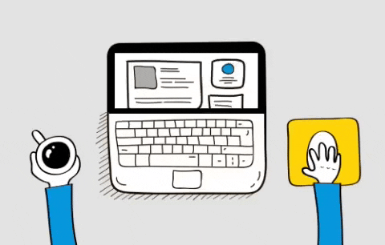

Gosto de muitas coisas,
umas delas é fazer simples
produções musicais quando
tenho algum tempo livre
nos fins de semana.
Gosto de desenvolver projetos,
sejam musicais ou 
relacionados a programação,
a sensação de ver o seu
trabalho pronto
é maravilhosa.